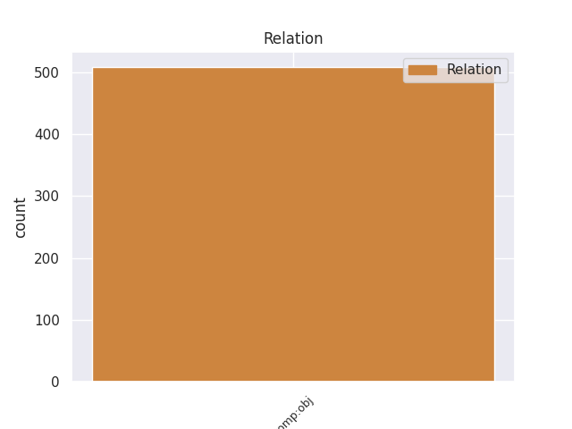
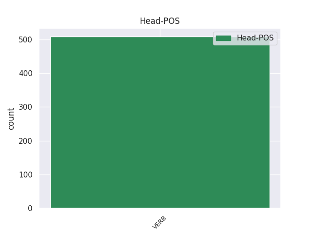
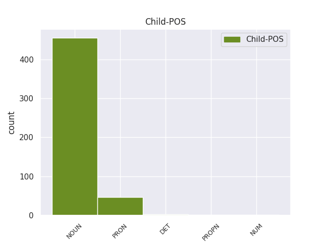

Distribution of features within this leaf



Agreement Rules sorted by frequency.
- When the dependent token is the direct object complements(comp:obj) of the head token, and the head token is VERB and the dependent token is NOUN.
1 4 _ _ _ _ 0 _ _ _
2 . _ _ _ _ 0 _ _ _
3 Komitetas _ _ _ _ 0 _ _ _
4 vadovaujasi _ _ _ _ 0 _ _ _
5 Daugiabučių _ _ _ _ 0 _ _ _
6 namų _ _ _ _ 0 _ _ _
7 modernizavimo _ _ _ _ 0 _ _ _
8 programa _ _ _ _ 0 _ _ _
9 , _ _ _ _ 0 _ _ _
10 patvirtinta _ _ _ _ 0 _ _ _
11 Lietuvos _ _ _ _ 0 _ _ _
12 Respublikos _ _ _ _ 0 _ _ _
13 Vyriausybės _ _ _ _ 0 _ _ _
14 2004 _ _ _ _ 0 _ _ _
15 m _ _ _ _ 0 _ _ _
16 . _ _ _ _ 0 _ _ _
17 rugsėjo _ _ _ _ 0 _ _ _
18 23 _ _ _ _ 0 _ _ _
19 d _ _ _ _ 0 _ _ _
20 . _ _ _ _ 0 _ _ _
21 nutarimu _ _ _ _ 0 _ _ _
22 Nr _ _ _ _ 0 _ _ _
23 . _ _ _ _ 0 _ _ _
24 1213 _ _ _ _ 0 _ _ _
25 ( _ _ _ _ 0 _ _ _
26 Žin _ _ _ _ 0 _ _ _
27 . _ _ _ _ 0 _ _ _
28 , _ _ _ _ 0 _ _ _
29 2004 _ _ _ _ 0 _ _ _
30 , _ _ _ _ 0 _ _ _
31 Nr _ _ _ _ 0 _ _ _
32 . _ _ _ _ 0 _ _ _
33 143-5232 _ _ _ _ 0 _ _ _
34 ; _ _ _ _ 0 _ _ _
35 2005 _ _ _ _ 0 _ _ _
36 , _ _ _ _ 0 _ _ _
37 Nr _ _ _ _ 0 _ _ _
38 . _ _ _ _ 0 _ _ _
39 78-2839 _ _ _ _ 0 _ _ _
40 ) _ _ _ _ 0 _ _ _
41 , _ _ _ _ 0 _ _ _
42 Valstybės _ _ _ _ 0 _ _ _
43 paramos _ _ _ _ 0 _ _ _
44 daugiabučiams _ _ _ _ 0 _ _ _
45 namams _ _ _ _ 0 _ _ _
46 modernizuoti _ _ _ _ 0 _ _ _
47 teikimo _ _ _ _ 0 _ _ _
48 ir _ _ _ _ 0 _ _ _
49 investicijų _ _ _ _ 0 _ _ _
50 projektų _ _ _ _ 0 _ _ _
51 energinio _ _ _ _ 0 _ _ _
52 efektyvumo _ _ _ _ 0 _ _ _
53 nustatymo _ _ _ _ 0 _ _ _
54 taisyklėmis _ _ _ _ 0 _ _ _
55 , _ _ _ _ 0 _ _ _
56 patvirtintomis patvirtinti VERB vksm.dlv.neveik.būt.mot.dgs.Įn. Case=Ins|Definite=Ind|Gender=Fem|Number=Plur|Polarity=Pos|Tense=Past|VerbForm=Part|Voice=Pass 0 _ _ _
57 Lietuvos _ _ _ _ 0 _ _ _
58 Respublikos _ _ _ _ 0 _ _ _
59 finansų _ _ _ _ 0 _ _ _
60 ministro _ _ _ _ 0 _ _ _
61 ir _ _ _ _ 0 _ _ _
62 aplinkos _ _ _ _ 0 _ _ _
63 ministro _ _ _ _ 0 _ _ _
64 2005 _ _ _ _ 0 _ _ _
65 m _ _ _ _ 0 _ _ _
66 . _ _ _ _ 0 _ _ _
67 rugpjūčio _ _ _ _ 0 _ _ _
68 12 _ _ _ _ 0 _ _ _
69 d _ _ _ _ 0 _ _ _
70 . _ _ _ _ 0 _ _ _
71 įsakymu įsakymas NOUN dkt.vyr.vns.Įn. Case=Ins|Gender=Masc|Number=Sing 56 comp:obj _ _
72 Nr _ _ _ _ 0 _ _ _
73 . _ _ _ _ 0 _ _ _
74 1K-237/D1-394 _ _ _ _ 0 _ _ _
75 ( _ _ _ _ 0 _ _ _
76 Žin _ _ _ _ 0 _ _ _
77 . _ _ _ _ 0 _ _ _
78 , _ _ _ _ 0 _ _ _
79 2005 _ _ _ _ 0 _ _ _
80 , _ _ _ _ 0 _ _ _
81 Nr _ _ _ _ 0 _ _ _
82 . _ _ _ _ 0 _ _ _
83 102-3792 _ _ _ _ 0 _ _ _
84 ) _ _ _ _ 0 _ _ _
85 , _ _ _ _ 0 _ _ _
86 Aplinkos _ _ _ _ 0 _ _ _
87 ministerijos _ _ _ _ 0 _ _ _
88 nuostatais _ _ _ _ 0 _ _ _
89 ( _ _ _ _ 0 _ _ _
90 Žin _ _ _ _ 0 _ _ _
91 . _ _ _ _ 0 _ _ _
92 , _ _ _ _ 0 _ _ _
93 1998 _ _ _ _ 0 _ _ _
94 , _ _ _ _ 0 _ _ _
95 Nr _ _ _ _ 0 _ _ _
96 . _ _ _ _ 0 _ _ _
97 84-2353 _ _ _ _ 0 _ _ _
98 ; _ _ _ _ 0 _ _ _
99 2002 _ _ _ _ 0 _ _ _
100 , _ _ _ _ 0 _ _ _
101 Nr _ _ _ _ 0 _ _ _
102 . _ _ _ _ 0 _ _ _
103 20-766 _ _ _ _ 0 _ _ _
104 ) _ _ _ _ 0 _ _ _
105 bei _ _ _ _ 0 _ _ _
106 šiuo _ _ _ _ 0 _ _ _
107 darbo _ _ _ _ 0 _ _ _
108 reglamentu _ _ _ _ 0 _ _ _
109 , _ _ _ _ 0 _ _ _
110 taip _ _ _ _ 0 _ _ _
111 pat _ _ _ _ 0 _ _ _
112 kitais _ _ _ _ 0 _ _ _
113 teisės _ _ _ _ 0 _ _ _
114 aktais _ _ _ _ 0 _ _ _
115 . _ _ _ _ 0 _ _ _
1 22 _ _ _ _ 0 _ _ _
2 . _ _ _ _ 0 _ _ _
3 Pašto _ _ _ _ 0 _ _ _
4 paslaugos _ _ _ _ 0 _ _ _
5 teikėjas _ _ _ _ 0 _ _ _
6 Lietuvos _ _ _ _ 0 _ _ _
7 Respublikos _ _ _ _ 0 _ _ _
8 Vyriausybės _ _ _ _ 0 _ _ _
9 ar _ _ _ _ 0 _ _ _
10 jos jis PRON įv.mot.vns.K. Case=Gen|Definite=Ind|Gender=Fem|Number=Sing|Person=3|PronType=Prs 11 comp:obj _ _
11 įgaliotos įgalioti VERB vksm.dlv.neveik.būt.mot.vns.K. Case=Gen|Definite=Ind|Gender=Fem|Number=Sing|Polarity=Pos|Tense=Past|VerbForm=Part|Voice=Pass 0 _ _ _
12 institucijos _ _ _ _ 0 _ _ _
13 nustatyta _ _ _ _ 0 _ _ _
14 tvarka _ _ _ _ 0 _ _ _
15 privalo _ _ _ _ 0 _ _ _
16 pateikti _ _ _ _ 0 _ _ _
17 Tarnybai _ _ _ _ 0 _ _ _
18 duomenis _ _ _ _ 0 _ _ _
19 apie _ _ _ _ 0 _ _ _
20 : _ _ _ _ 0 _ _ _
1 Kovo _ _ _ _ 0 _ _ _
2 mėn _ _ _ _ 0 _ _ _
3 . _ _ _ _ 0 _ _ _
4 Inspekcijos _ _ _ _ 0 _ _ _
5 atstovas _ _ _ _ 0 _ _ _
6 dalyvavo _ _ _ _ 0 _ _ _
7 Europolo Europolas PROPN dkt.tikr.vyr.vns.K. Case=Gen|Gender=Masc|Number=Sing 8 comp:obj _ _
8 tvarkomų tvarkyti VERB vksm.dlv.neveik.es.vyr.dgs.K. Case=Gen|Definite=Ind|Gender=Masc|Number=Plur|Polarity=Pos|Tense=Pres|VerbForm=Part|Voice=Pass 0 _ _ _
9 duomenų _ _ _ _ 0 _ _ _
10 kokybės _ _ _ _ 0 _ _ _
11 ir _ _ _ _ 0 _ _ _
12 Europolo _ _ _ _ 0 _ _ _
13 informacinės _ _ _ _ 0 _ _ _
14 sistemos _ _ _ _ 0 _ _ _
15 funkcionavimo _ _ _ _ 0 _ _ _
16 tikrinime _ _ _ _ 0 _ _ _
17 . _ _ _ _ 0 _ _ _
Disagree Examples:
1 Siekiant _ _ _ _ 0 _ _ _
2 skaidrumo _ _ _ _ 0 _ _ _
3 ir _ _ _ _ 0 _ _ _
4 viešumo _ _ _ _ 0 _ _ _
5 siūloma _ _ _ _ 0 _ _ _
6 viešinti _ _ _ _ 0 _ _ _
7 universitetų _ _ _ _ 0 _ _ _
8 rektorių _ _ _ _ 0 _ _ _
9 , _ _ _ _ 0 _ _ _
10 fakultetų _ _ _ _ 0 _ _ _
11 , _ _ _ _ 0 _ _ _
12 institutų _ _ _ _ 0 _ _ _
13 vadovų _ _ _ _ 0 _ _ _
14 ir _ _ _ _ 0 _ _ _
15 kitų _ _ _ _ 0 _ _ _
16 aukštas _ _ _ _ 0 _ _ _
17 pareigas pareigos NOUN dkt.mot.dgs.G. Case=Acc|Gender=Fem|Number=Plur 20 comp:obj _ _
18 mokslo _ _ _ _ 0 _ _ _
19 įstaigose _ _ _ _ 0 _ _ _
20 užimančių užimti VERB vksm.dlv.veik.es.vyr.dgs.K. Case=Gen|Definite=Ind|Gender=Masc|Number=Plur|Polarity=Pos|Tense=Pres|VerbForm=Part|Voice=Act 0 _ _ _
21 asmenų _ _ _ _ 0 _ _ _
22 darbo _ _ _ _ 0 _ _ _
23 užmokestį _ _ _ _ 0 _ _ _
24 ir _ _ _ _ 0 _ _ _
25 kitas _ _ _ _ 0 _ _ _
26 pajamas _ _ _ _ 0 _ _ _
27 . _ _ _ _ 0 _ _ _
1 Deja _ _ _ _ 0 _ _ _
2 , _ _ _ _ 0 _ _ _
3 trinaris _ _ _ _ 0 _ _ _
4 modelis _ _ _ _ 0 _ _ _
5 turi _ _ _ _ 0 _ _ _
6 nemažai _ _ _ _ 0 _ _ _
7 trūkumų _ _ _ _ 0 _ _ _
8 : _ _ _ _ 0 _ _ _
9 pirma _ _ _ _ 0 _ _ _
10 , _ _ _ _ 0 _ _ _
11 skirtingos _ _ _ _ 0 _ _ _
12 grupuotės _ _ _ _ 0 _ _ _
13 LKP _ _ _ _ 0 _ _ _
14 ir _ _ _ _ 0 _ _ _
15 Sąjūdyje _ _ _ _ 0 _ _ _
16 tarsi _ _ _ _ 0 _ _ _
17 neišvengiamai _ _ _ _ 0 _ _ _
18 priskiriamos priskirti VERB vksm.dlv.neveik.es.mot.dgs.V. Case=Nom|Definite=Ind|Gender=Fem|Number=Plur|Polarity=Pos|Tense=Pres|VerbForm=Part|Voice=Pass 0 _ _ _
19 šiose _ _ _ _ 0 _ _ _
20 organizacijose _ _ _ _ 0 _ _ _
21 dominuojančiai _ _ _ _ 0 _ _ _
22 daugumai dauguma NOUN dkt.mot.vns.N. Case=Dat|Gender=Fem|Number=Sing 18 comp:obj _ SpaceAfter=No
23 , _ _ _ _ 0 _ _ _
24 antra _ _ _ _ 0 _ _ _
25 , _ _ _ _ 0 _ _ _
26 pasakojime _ _ _ _ 0 _ _ _
27 neminimi _ _ _ _ 0 _ _ _
28 Sąjūdžio _ _ _ _ 0 _ _ _
29 ir _ _ _ _ 0 _ _ _
30 naujai _ _ _ _ 0 _ _ _
31 besikuriančių _ _ _ _ 0 _ _ _
32 , _ _ _ _ 0 _ _ _
33 kartais _ _ _ _ 0 _ _ _
34 su _ _ _ _ 0 _ _ _
35 Sąjūdžiu _ _ _ _ 0 _ _ _
36 tiesiogiai _ _ _ _ 0 _ _ _
37 nieko _ _ _ _ 0 _ _ _
38 bendra _ _ _ _ 0 _ _ _
39 neturinčių _ _ _ _ 0 _ _ _
40 , _ _ _ _ 0 _ _ _
41 politinių _ _ _ _ 0 _ _ _
42 organizacijų _ _ _ _ 0 _ _ _
43 santykiai _ _ _ _ 0 _ _ _
44 . _ _ _ _ 0 _ _ _
1 SSRS _ _ _ _ 0 _ _ _
2 Konstitucijos _ _ _ _ 0 _ _ _
3 keitimas _ _ _ _ 0 _ _ _
4 turėjo _ _ _ _ 0 _ _ _
5 ne _ _ _ _ 0 _ _ _
6 išplėsti _ _ _ _ 0 _ _ _
7 respublikų _ _ _ _ 0 _ _ _
8 teises _ _ _ _ 0 _ _ _
9 , _ _ _ _ 0 _ _ _
10 bet _ _ _ _ 0 _ _ _
11 įtvirtinti _ _ _ _ 0 _ _ _
12 dešimtmečiais _ _ _ _ 0 _ _ _
13 susiklosčiusią _ _ _ _ 0 _ _ _
14 sistemą _ _ _ _ 0 _ _ _
15 , _ _ _ _ 0 _ _ _
16 grįstą grįsti VERB vksm.dlv.neveik.būt.mot.vns.G. Case=Acc|Definite=Ind|Gender=Fem|Number=Sing|Polarity=Pos|Tense=Past|VerbForm=Part|Voice=Pass 0 _ _ _
17 SSRS _ _ _ _ 0 _ _ _
18 centro _ _ _ _ 0 _ _ _
19 ir _ _ _ _ 0 _ _ _
20 rusų _ _ _ _ 0 _ _ _
21 dominavimu dominavimas NOUN dkt.vyr.vns.Įn. Case=Ins|Gender=Masc|Number=Sing 16 comp:obj _ _
22 sovietinėje _ _ _ _ 0 _ _ _
23 imperijoje _ _ _ _ 0 _ _ _
24 , _ _ _ _ 0 _ _ _
25 o _ _ _ _ 0 _ _ _
26 deklaratyvias _ _ _ _ 0 _ _ _
27 sąjunginių _ _ _ _ 0 _ _ _
28 respublikų _ _ _ _ 0 _ _ _
29 teises _ _ _ _ 0 _ _ _
30 gerokai _ _ _ _ 0 _ _ _
31 sumažinti _ _ _ _ 0 _ _ _
32 . _ _ _ _ 0 _ _ _
1 Taip _ _ _ _ 0 _ _ _
2 pat _ _ _ _ 0 _ _ _
3 gaila _ _ _ _ 0 _ _ _
4 , _ _ _ _ 0 _ _ _
5 kad _ _ _ _ 0 _ _ _
6 neatsirado _ _ _ _ 0 _ _ _
7 istorijos _ _ _ _ 0 _ _ _
8 puslapiuose _ _ _ _ 0 _ _ _
9 vietos _ _ _ _ 0 _ _ _
10 ir _ _ _ _ 0 _ _ _
11 paprastai _ _ _ _ 0 _ _ _
12 minčiai _ _ _ _ 0 _ _ _
13 - _ _ _ _ 0 _ _ _
14 1989 _ _ _ _ 0 _ _ _
15 - _ _ _ _ 0 _ _ _
16 1990 _ _ _ _ 0 _ _ _
17 m _ _ _ _ 0 _ _ _
18 . _ _ _ _ 0 _ _ _
19 Sąjūdžiui _ _ _ _ 0 _ _ _
20 Lietuvos _ _ _ _ 0 _ _ _
21 nepriklausomybė _ _ _ _ 0 _ _ _
22 buvo _ _ _ _ 0 _ _ _
23 pagrindinis _ _ _ _ 0 _ _ _
24 tikslas _ _ _ _ 0 _ _ _
25 , _ _ _ _ 0 _ _ _
26 dėl _ _ _ _ 0 _ _ _
27 kurio _ _ _ _ 0 _ _ _
28 negalimos _ _ _ _ 0 _ _ _
29 jokios _ _ _ _ 0 _ _ _
30 diskusijos _ _ _ _ 0 _ _ _
31 , _ _ _ _ 0 _ _ _
32 tuo _ _ _ _ 0 _ _ _
33 tarpu _ _ _ _ 0 _ _ _
34 LKP _ _ _ _ 0 _ _ _
35 , _ _ _ _ 0 _ _ _
36 patyrusiai patirti VERB vksm.dlv.veik.būt-k.mot.vns.N. Aspect=Perf|Case=Dat|Definite=Ind|Gender=Fem|Number=Sing|Polarity=Pos|Tense=Past|VerbForm=Part|Voice=Act 0 _ _ _
37 visišką _ _ _ _ 0 _ _ _
38 nesėkmę nesėkmė NOUN dkt.mot.vns.G. Case=Acc|Gender=Fem|Number=Sing 36 comp:obj _ _
39 gilėjančios _ _ _ _ 0 _ _ _
40 krizės _ _ _ _ 0 _ _ _
41 sąlygomis _ _ _ _ 0 _ _ _
42 savais _ _ _ _ 0 _ _ _
43 kanalais _ _ _ _ 0 _ _ _
44 gauti _ _ _ _ 0 _ _ _
45 ekonominį _ _ _ _ 0 _ _ _
46 savarankiškumą _ _ _ _ 0 _ _ _
47 , _ _ _ _ 0 _ _ _
48 nepriklausomybės _ _ _ _ 0 _ _ _
49 paskelbimas _ _ _ _ 0 _ _ _
50 buvo _ _ _ _ 0 _ _ _
51 tik _ _ _ _ 0 _ _ _
52 priemonė _ _ _ _ 0 _ _ _
53 deryboms _ _ _ _ 0 _ _ _
54 su _ _ _ _ 0 _ _ _
55 Maskva _ _ _ _ 0 _ _ _
56 . _ _ _ _ 0 _ _ _
1 Ir _ _ _ _ 0 _ _ _
2 bandymas _ _ _ _ 0 _ _ _
3 pradėti _ _ _ _ 0 _ _ _
4 represijas _ _ _ _ 0 _ _ _
5 prieš _ _ _ _ 0 _ _ _
6 1988 _ _ _ _ 0 _ _ _
7 vasario _ _ _ _ 0 _ _ _
8 LKP _ _ _ _ 0 _ _ _
9 CK _ _ _ _ 0 _ _ _
10 plenume _ _ _ _ 0 _ _ _
11 , _ _ _ _ 0 _ _ _
12 atsisakymas _ _ _ _ 0 _ _ _
13 keisti _ _ _ _ 0 _ _ _
14 Konstitucijos _ _ _ _ 0 _ _ _
15 6 _ _ _ _ 0 _ _ _
16 straipsnį _ _ _ _ 0 _ _ _
17 ir _ _ _ _ 0 _ _ _
18 neslepiamas _ _ _ _ 0 _ _ _
19 kolaboravimas _ _ _ _ 0 _ _ _
20 su _ _ _ _ 0 _ _ _
21 Maskva _ _ _ _ 0 _ _ _
22 - _ _ _ _ 0 _ _ _
23 viskas _ _ _ _ 0 _ _ _
24 pasirodo _ _ _ _ 0 _ _ _
25 buvus _ _ _ _ 0 _ _ _
26 išmintingos _ _ _ _ 0 _ _ _
27 komunistų _ _ _ _ 0 _ _ _
28 vadovybės _ _ _ _ 0 _ _ _
29 politika _ _ _ _ 0 _ _ _
30 , _ _ _ _ 0 _ _ _
31 kuriai kuris DET įv.mot.vns.N. Case=Dat|Definite=Ind|Gender=Fem|Number=Sing|PronType=Int 32 comp:obj _ _
32 priešinama priešinti VERB vksm.dlv.neveik.es.mot.V. Case=Nom|Definite=Ind|Gender=Fem|Polarity=Pos|Tense=Pres|VerbForm=Part|Voice=Pass 0 _ _ _
33 amžinai _ _ _ _ 0 _ _ _
34 klystančio _ _ _ _ 0 _ _ _
35 , _ _ _ _ 0 _ _ _
36 ne _ _ _ _ 0 _ _ _
37 laiku _ _ _ _ 0 _ _ _
38 ir _ _ _ _ 0 _ _ _
39 ne _ _ _ _ 0 _ _ _
40 vietoje _ _ _ _ 0 _ _ _
41 veikiančio _ _ _ _ 0 _ _ _
42 Sąjūdžio _ _ _ _ 0 _ _ _
43 politika _ _ _ _ 0 _ _ _
44 . _ _ _ _ 0 _ _ _